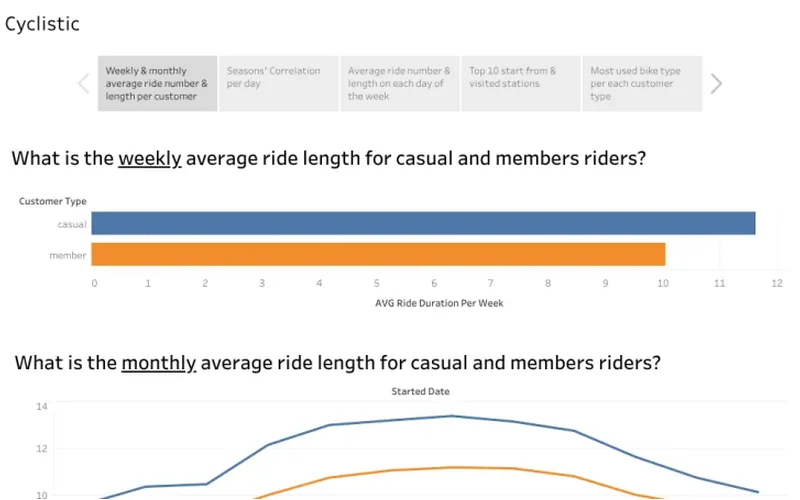

Cyclistic Bike-Share
How do casual riders and annual members ride differently, and how can casual riders be converted? 5.7M Chicago trips from 2023.
- Casual riders take longer rides: 12.5 min on average vs 10.4 for members.
- Members ride most on weekdays (Thursday peak); weekend rides are the longest.
- Casual riders cluster at lakefront and park stations and prefer e-bikes.
- R
- MySQL
- Tableau
- PowerPoint